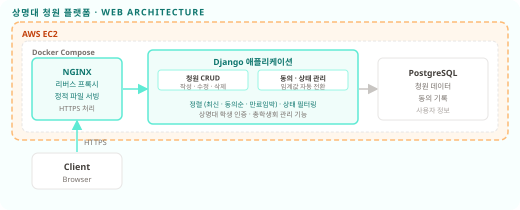

←
포트폴리오로 돌아가기
상명대 청원 플랫폼
실서비스 운영
2022 - 2024 / SMUNITY 활동
상명대 학생들이 학교에 직접 청원을 올리고 동의를 모을 수 있는 플랫폼, 총학생회 연계 운영
Python
Django
NGINX
Docker
AWS EC2
PostgreSQL
핵심 성과
실서비스
smu-petition.site 운영 중
총학생회 공식 연계 플랫폼
청원 자동화
동의 임계값 달성 시 자동 상태 전환
진행 → 답변 대기 → 완료 파이프라인
아키텍처

주요 구현 내용
청원 CRUD 및 상태 관리
: 청원 작성 / 수정 / 삭제 기능 구현. 진행 중 / 답변 대기 / 답변 완료 / 만료 / 반려 등 다단계 상태 정의 및 전환 로직 설계
동의 임계값 자동 상태 전환
: 청원이 설정된 동의 수에 도달하면 자동으로 총학생회 답변 대기 상태로 전환. 수동 처리 없이 파이프라인 자동화
정렬 및 필터링
: 최신순, 동의순, 만료임박순 정렬 지원. 상태별(진행 중 / 완료 / 만료 / 반려) 필터링으로 청원 탐색 편의성 제공
학생 인증 및 권한 분리
: 상명대 학생 인증 후 청원 참여 가능. 총학생회 관리자 계정으로 청원 답변 등록 및 상태 업데이트 권한 분리
NGINX + Docker Compose 배포
: NGINX 리버스 프록시 및 정적 파일 서빙, Docker Compose로 전체 서비스 컨테이너화하여 AWS EC2에 배포
링크
smu-petition.site
smu-nity/SMU-Petition